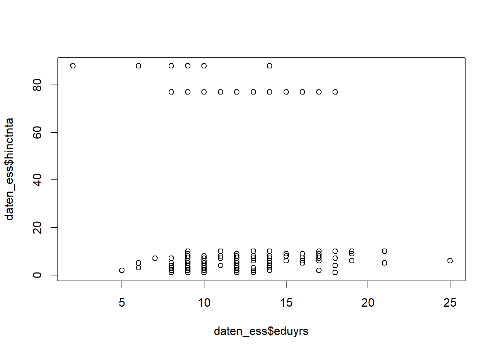
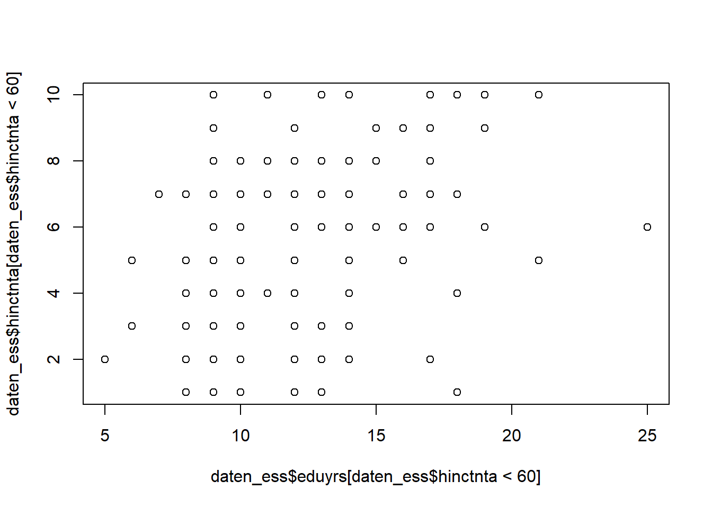
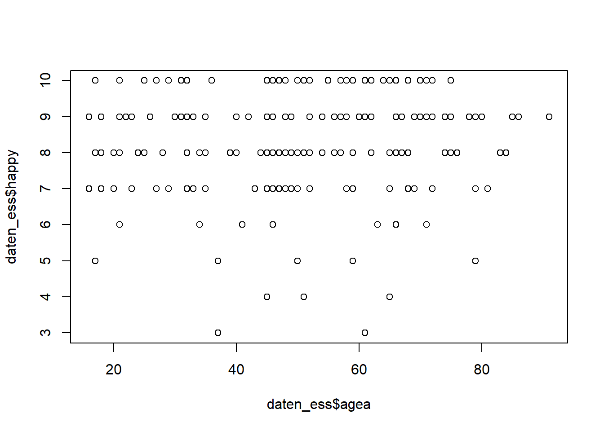
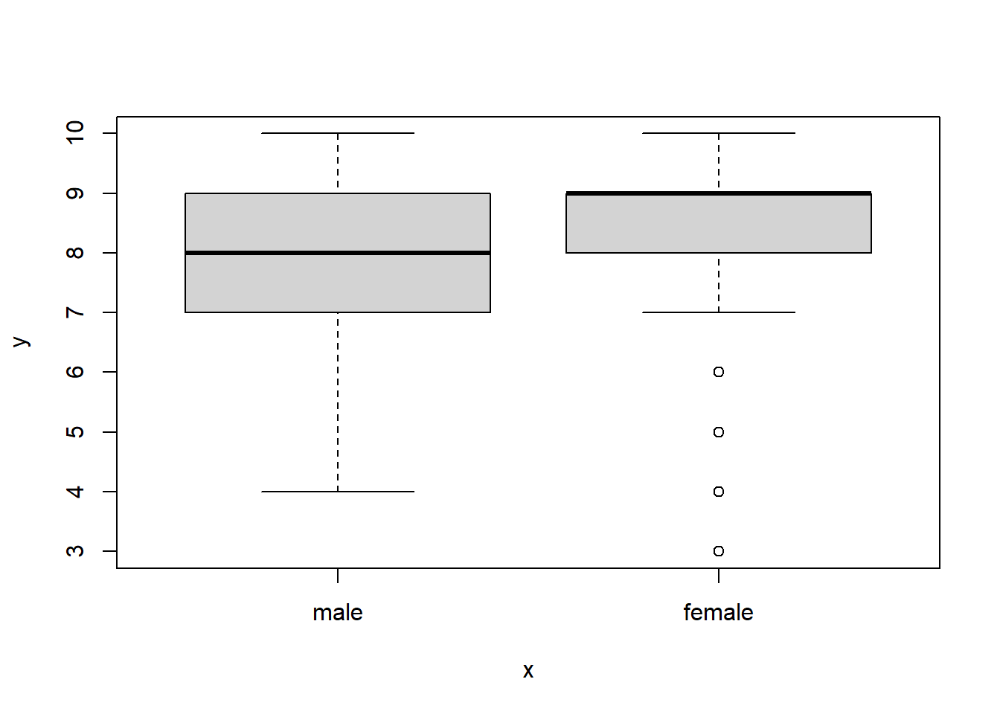
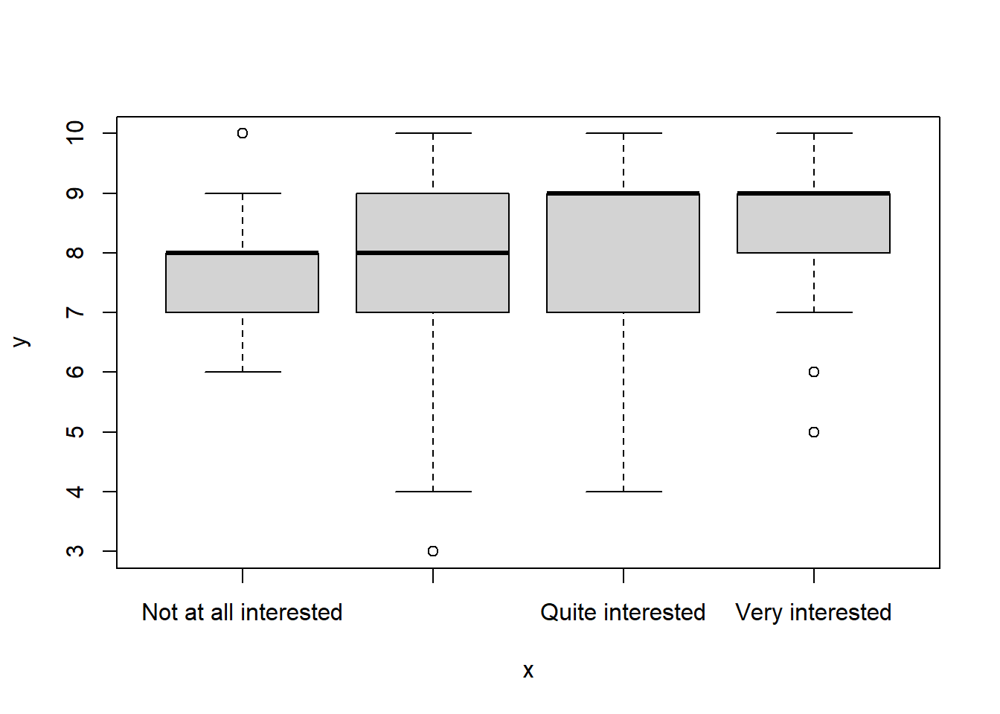
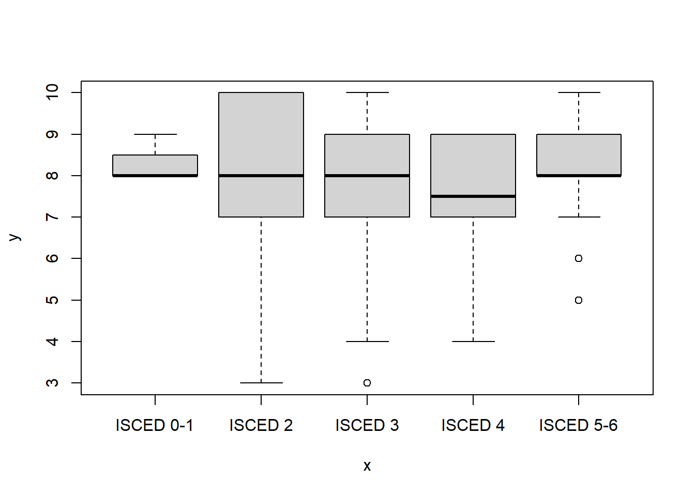
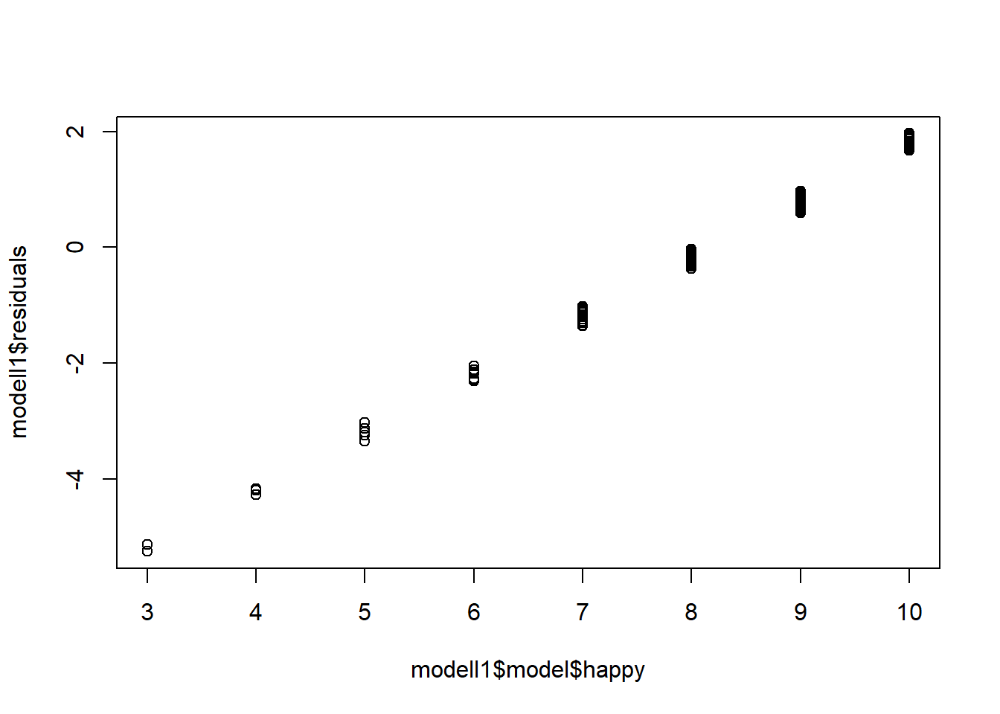
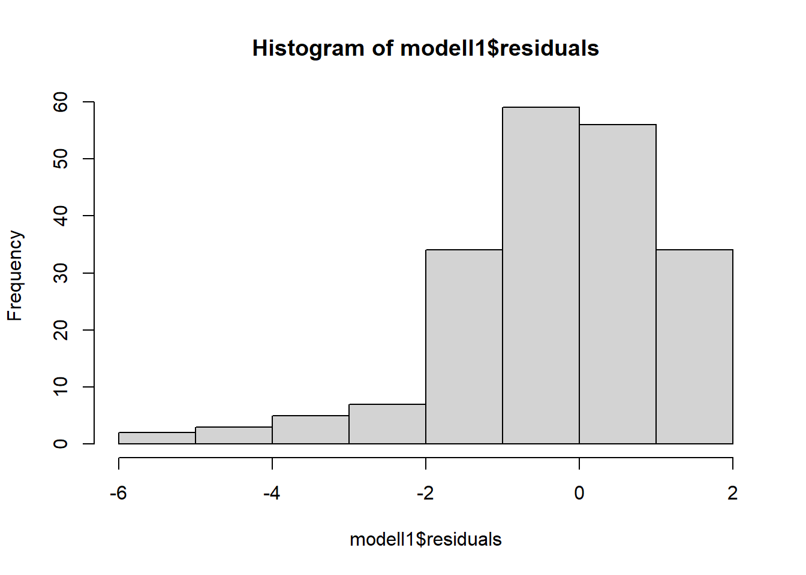

10 Wochenplan 10
…zu den Einheiten vom 26.11. & 03.12.2020, Einführung lineare Regression
10.1 Lernziele WP10
Nachdem wir unsere Daten aufbereitet, ersten Analysen mittels Kreuztabellen gemacht und die Faktoren definiert haben gehen wir in der kommenden Woche sukzessive zur Regressionsanalyse über. Dabei behalten wir die Arbeit mit unterschiedlichen Datenformaten (inklusive Faktoren) im Auge. Wir beginnen mit bivariaten Regressionsmodellen und machen uns Schritt für Schritt mit der Definition und Interpretation dieser Modelle in R vertraut.
Konkret lassen sich für den 10. Wochenplan folgende Lernziele definieren:
Sie sind mit der Funktion
lm()in ihrer Grundstrukturen vertraut.Sie kennen die Notation, mit der in R Regressionsmodelle in Formeln dargestellt werden.
Sie verstehen, wie in einem linearen Regressionsmodell sowohl metrische als auch kategoriale und binominale unabhängige Variablen einfliessen können.
Sie haben einen ersten Eindruck von der Struktur des “Ergebnisobjekts”, das
lm()erzeugt.Sie wissen, wie Sie den Modelloutput einer linearen Regression in R interpretieren müssen und die Güte eines Modells einschätzen sollten.
10.2 Aufgaben WP10
- Laden Sie Ihr Datenimport-Skript. Arbeiten Sie anschliessend in einem R Markdown-Dokument weiter.
Wichtig: Der Dateipfad, wo Ihr Skript liegt, muss nochmals angegeben werden (z.Bsp. über den setwd()-Befehl) und diese beiden Befehle müssen sich im selben Code-Chunk des R Markdown Dokument befinden.
- Formulieren Sie zwei inhaltliche Fragestellungen, die Sie anhand unserer ESS-Daten mit einem einfachen (bivariaten) Regressionsmodell beantworten können. Eine der beiden Fragestellungen soll eine kategoriale Variable als unabhängige Variable enthalten. Nutzen Sie je ein Streudiagramm, um erste Hinweis zu Ihren Fragestellungen zu erhalten.
Die bivariate Regressionsanalyse berechnet die gerichtete (asymmetrische) Beziehung zwischen zwei metrischen Variablen, in der einfachsten Form einer abhängigen Variablen Y auf nur eine unabhängige Variable X. Dabei repräsentiert Y die Wirkung und X die Ursache (Diaz-Bone 2019, 96f). Im Rahmen einer solchen Regressionsanalyse können auch kategoriale Variablen als unabhängige Variablen hinzugezogen werden. Bei kategorialen Variablen mit mehreren Ausprägungen wird allerdings ein multiples Modell generiert, das für die jeweiligen Ausprägungen einmal eine Referenzkategorie und für den Rest eine Dummy-Variable erstellt.
Hier werden nun sieben Beispiele für bivariate Regressionsmodelle und Forschungsfragen von Studierenden aufgelistet:
Bsp 1: Inwiefern sind die Ausprägungen der Variable zum Einkommen des gesamten Haushalts auf die Anzahl der Ausbildungsjahre zurückzuführen bzw. lassen sich anhand von dieser Variable erklären? Wie gross ist der Einfluss von Ausbildungsjahren der befragten Person auf das Einkommen ihres gesamten Haushalts? (Diethelm)


Anhand des ersten Streudiagramms wird nicht wirklich klar, ob der Zusammenhang nur schlecht sichtbar ist, oder ob dieser nicht wirklich vorhanden ist. Deshalb werden im darauffolgenden Plot die Extremwerte ausgeschlossen.
Bsp 2: Welchen Einfluss hat das Alter auf die Glückseligkeit? (Fäs) …oder auch: Welchen Einfluss hat das Alter (agea) auf die Zufriedenheit (happy)? (Ineichen) …oder auch: Wie hängt Glücklichsein vom Alter ab? (Balakrishnan)

Im Rahmen dieses Beispiel zeigt sich nun vor allem ein kaum vorhandenere Zusammenhang, der aber noch nicht die Linearitätsannahme verletzten würde.
Bsp 3: Hat das Geschlecht einen Einfluss auf die Glücklichkeit? (Nguyen)

Da wir die Variable “gndr” als Faktor definiert haben zeigt uns R nun die Verteilung der abhängigen Variable (“happy”) in zwei Bloxplots gemäss den Ausprägungen der unabhängigen Variable an.
Wichitg: Die Variable “gndr” kann direkt im Modell integriert werden als Faktor, und muss nicht zuerst noch als numerische Variable definiert werden (etwa as.numeric()).
Bsp 4: Wie hängt Glücklichsein (Y, die Wirkung) vom politischen Interesse (X, die Ursache) ab? (Schürmann)

Auch in diesem Beispiel gibt uns R wieder verschiedenen Boxplots aus – und wir sehen, dass anscheinend ein Politikinteresse (oder eine Politikverdrossenheit) auf das Glücksein einwirkt.
Bsp 5: Wie stark beeinflusst das Ausbildungsniveau einer Person deren Grad an Glücklichkeit? (Tomaschett)

Hier ist nun nicht nur ein Hinweis auf einen eher geringeren Zusammenhang drin, sondern die verschiedenen Boxplots zeigen auch auf, dass womöglich kein linearer Zusammenhang vorhanden ist.
Bsp 6 & 7: Die letzten beiden Beispiele sind keine linearen Regressionen. Ersteres hat nämlich eine binominale Variablen als abhängige Variable (und wäre somit eine logistische Regression), und letzteres eine kategoriale Variable als abhängige Variable (dies kann nicht über eine Regression gerechet werden).
Welchen Einfluss hat das Bildungsniveau darauf, dass Kinder im Haushalt leben oder nicht? (Roth)
Ich möchte untersuchen, inwiefern die Variable “polintr” durch das Geschlecht beeinflusst wird. (Kurmann)
- Formulieren und überprüfen Sie Ihre beiden Modelle mittels der Funktion
lm(). Machen Sie sich dazu vorab mit dieser Funktion vertraut (Hilfeseite der Funktion, Online-Tutorials …). Erläutern Sielm()kurz in eigenen Worten!
Die Funktion lm() ist der Befehl in R zur Berechnung von linearen Modellen allgemein (Manderscheid 2017, 109f). Sie “übersetzt” die normale Regressionsgleichung "y = b0 + b1*x + e" zu “y ~ x” oder eben response ~ term.
Mit der Formel können dann auch multiple, lineare Regressionen dargestellt werden, response ~ term + term, oder um Interaktionsterme ergänzt werden, response ~ term + term * term.
Die weiteren Argumente (neben der eigentlichen Formel sowie der Angabe des Datensatzes) erlauben etwa die Daten zu unterteilen, Gewichtungen einzubauen, den Umgang mit fehlenden Werten genauer zu bestimmen, usw. Im Folgenden brauchen wir die Funktion und ihre Argumente aber nicht weiter zu spezifizieren, sondern die Standardeinstellungen der Argumente reichen aus.
Nachfolgend werden wir mit den Beispielen 2 und 4 weiterarbeiten:
- Weisen Sie Ihre Regressionsanalysen jeweils einem “Ergebnisobjekt” zu! Wie ist dieses Objekt aufgebaut? Welche Komponenten und Informationen beinhaltet es?
modell1 <- lm(happy ~ agea, data = daten_ess)
modell2 <- lm(happy ~ polintr, data = daten_ess)
#Am Beispiel des ersten Modells:
str(modell1)## List of 12
## $ coefficients : Named num [1:2] 7.94763 0.00502
## ..- attr(*, "names")= chr [1:2] "(Intercept)" "agea"
## $ residuals : Named num [1:200] -0.209 0.676 1.746 -0.169 0.701 ...
## ..- attr(*, "names")= chr [1:200] "1" "2" "3" "4" ...
## $ effects : Named num [1:200] -115.895 -1.271 1.731 -0.141 0.664 ...
## ..- attr(*, "names")= chr [1:200] "(Intercept)" "agea" "" "" ...
## $ rank : int 2
## $ fitted.values: Named num [1:200] 8.21 8.32 8.25 8.17 8.3 ...
## ..- attr(*, "names")= chr [1:200] "1" "2" "3" "4" ...
## $ assign : int [1:2] 0 1
## $ qr :List of 5
## ..$ qr : num [1:200, 1:2] -14.1421 0.0707 0.0707 0.0707 0.0707 ...
## .. ..- attr(*, "dimnames")=List of 2
## .. .. ..$ : chr [1:200] "1" "2" "3" "4" ...
## .. .. ..$ : chr [1:2] "(Intercept)" "agea"
## .. ..- attr(*, "assign")= int [1:2] 0 1
## ..$ qraux: num [1:2] 1.07 1.1
## ..$ pivot: int [1:2] 1 2
## ..$ tol : num 1e-07
## ..$ rank : int 2
## ..- attr(*, "class")= chr "qr"
## $ df.residual : int 198
## $ xlevels : Named list()
## $ call : language lm(formula = happy ~ agea, data = daten_ess)
## $ terms :Classes 'terms', 'formula' language happy ~ agea
## .. ..- attr(*, "variables")= language list(happy, agea)
## .. ..- attr(*, "factors")= int [1:2, 1] 0 1
## .. .. ..- attr(*, "dimnames")=List of 2
## .. .. .. ..$ : chr [1:2] "happy" "agea"
## .. .. .. ..$ : chr "agea"
## .. ..- attr(*, "term.labels")= chr "agea"
## .. ..- attr(*, "order")= int 1
## .. ..- attr(*, "intercept")= int 1
## .. ..- attr(*, "response")= int 1
## .. ..- attr(*, ".Environment")=<environment: R_GlobalEnv>
## .. ..- attr(*, "predvars")= language list(happy, agea)
## .. ..- attr(*, "dataClasses")= Named chr [1:2] "numeric" "numeric"
## .. .. ..- attr(*, "names")= chr [1:2] "happy" "agea"
## $ model :'data.frame': 200 obs. of 2 variables:
## ..$ happy: int [1:200] 8 9 10 8 9 9 10 10 8 7 ...
## ..$ agea : int [1:200] 52 75 61 44 70 52 36 29 74 72 ...
## ..- attr(*, "terms")=Classes 'terms', 'formula' language happy ~ agea
## .. .. ..- attr(*, "variables")= language list(happy, agea)
## .. .. ..- attr(*, "factors")= int [1:2, 1] 0 1
## .. .. .. ..- attr(*, "dimnames")=List of 2
## .. .. .. .. ..$ : chr [1:2] "happy" "agea"
## .. .. .. .. ..$ : chr "agea"
## .. .. ..- attr(*, "term.labels")= chr "agea"
## .. .. ..- attr(*, "order")= int 1
## .. .. ..- attr(*, "intercept")= int 1
## .. .. ..- attr(*, "response")= int 1
## .. .. ..- attr(*, ".Environment")=<environment: R_GlobalEnv>
## .. .. ..- attr(*, "predvars")= language list(happy, agea)
## .. .. ..- attr(*, "dataClasses")= Named chr [1:2] "numeric" "numeric"
## .. .. .. ..- attr(*, "names")= chr [1:2] "happy" "agea"
## - attr(*, "class")= chr "lm"Die Funktion lm() generiert uns eine Listenobjekt mit 12 bzw. 13 weiteren Unterobjekten. Die genauen Details, was in diesen Ergebnisobjekten zu finden ist, können wir der Hilfeseite der unter Value entnehmen.
“An object of class ‘lm’ is a list containing at least the following components:
coefficients: a named vector of coefficients
residuals: the residuals, that is response minus fitted values.
fitted.values: the fitted mean values.
rank: the numeric rank of the fitted linear model.
weights: (only for weighted fits) the specified weights.
df.residual: the residual degrees of freedom.
call: the matched call.
terms: the terms object used.
contrasts: (only where relevant) the contrasts used.
xlevels: (only where relevant) a record of the levels of the factors used in fitting.
offset: the offset used (missing if none were used).
y: if requested, the response used.
x: if requested, the model matrix used.
model: if requested (the default), the model frame used.
na.action: (where relevant) information returned by model.frame on the special handling of NAs.”
Wie immer können wir auf diese Elemente zugreifen, z.Bsp. um uns ein Streudiagramm der Residuen ausgeben zu lassen:


Beim Ergebnisobjekt des zweiten Modells sehen wir nun eine Veränderung, nämliche dass als weiteres Element der Liste “contrasts” hinzugekommen (als Hinweis auf die “Kontrastierung” bei der kategorialen, unabhängigen Variable, siehe auch unten).
## NULL## $polintr
## [1] "contr.poly"- Interpretieren Sie die Ergebnisse Ihrer beiden Regressionsanalysen.
Für die Interpretation des Modells bzw. des Objektes verwenden wir die summary()-Funktion:
##
## Call:
## lm(formula = happy ~ agea, data = daten_ess)
##
## Residuals:
## Min 1Q Median 3Q Max
## -5.2540 -1.0305 -0.0983 0.8577 1.9670
##
## Coefficients:
## Estimate Std. Error t value Pr(>|t|)
## (Intercept) 7.947628 0.289850 27.420 <2e-16 ***
## agea 0.005023 0.005532 0.908 0.365
## ---
## Signif. codes: 0 '***' 0.001 '**' 0.01 '*' 0.05 '.' 0.1 ' ' 1
##
## Residual standard error: 1.399 on 198 degrees of freedom
## Multiple R-squared: 0.004147, Adjusted R-squared: -0.0008828
## F-statistic: 0.8245 on 1 and 198 DF, p-value: 0.365Die Funktion gibt uns anschliessend verschiedenste Kennzahlen aus. Die Auflistung beginnt mit der Formel (Call), geht über zu einer kurzen Beschreibung der Verteilung der Residuen (Residuals), bevor dann die Koeffizienten und anschliessend eine Übersicht zum gesammten Modell folgen.
Bei den Koeffizienten (Coefficients) finden wir vier Kennzahlen und eine Ergänzung:
Zuerst sind es die eigentlichen Werte der Koeffizienten (Estimate), d.h. der b0-Wert (Intercept) und der Koeffizient der unabhängigen Variable. Ersterer gibt den Vorhersagewert an, wenn die unabhängige Variable 0 wäre (7.947628), während letzterer die Zunahme des Vorhersagewertes bei einer Zunahme der unabhängigen Variable um 1 angibt (0.005023).
Die zweite Kennzahl ist der Standardfehler (Std.Error), also die durchschnittliche Abweichung der Koeffizienten, da diese ja auf Stichprobendaten beruhen. Das heisst wir würden einen neuen Wert bekommen, wenn wir eine neue Stichprobe ziehen würden und dieser Wert würde im Durchschnitt um 0.005532 abweichen. Daumenregel: Das Ergebnis von Regressionskoeffizient – (2*SE) sollte nicht 0 überschreiten bzw. im Vergleich zum Koeffizienten das Vorzeichen wechseln. Sonst wäre das ein Hinweis, dass kein Einfluss der unabhängigen Variable besteht (da jeweils rund +2x & -2x Standardfehler rund 95% der Ausprägungen einer Normalverteilung repräsentieren). Es gilt also den Standardfehler im Zusammenhang zum Regressionskoeffizient zu betrachten.
Die dritte Kennzahl ist der T-Wert (t value), was der eigentlichen Testwerte für die t-Verteilung repräsentiert (Diaz-Bone 2019, 224). Als Daumenregel: T Wert, die grösser als 2 sind, werden meistens signifikant sein.
Der p-Wert (Pr(>|t|)) ist der Signifikanzwert für einzelne Regressionskoeffizienten. Wiederum: Die Kennzahl gibt uns an, wie wahrscheinlich es ist, einen solchen (oder grösseren) Wert für den Regressionskoeffizienten zu erhalten unter der Annahme, dass die Nullhypothese in der Grundgesamtheit zutreffen würde.10
Zusätzlich findet sich auch jeweils noch der Hinweis zu den Sternchen als Signifikanzcodes.
Anschliessend folgen weitere Kennwerte zum gesamten Modell:
Die Standardabweichung der Residuen wird ausgegeben (Residual standard error) sowie die Freiheitsgrade (degrees of freedom), d.h. N - J - 1, wobei J die Anzahl unabhängiger Variablen ist.
Danach folgen das multiple R-Quadrart (Multiple R-squared) sowie (Adjusted R-squared). Ersteres gibt uns die Erklärungsleistung des Modells sowie zugleich die Stärke des gerichteten, statistischen Zusammenhangs zwischen X und Y an. Letzteres ist ein Gütemass, dass die Erklärungsleistung im Bezug zu den Anzahl Variablen betrachtet und den Wert für Stichprobendaten etwas anpasst (Diaz-Bone 2019, 223).
Schliesslich finden sich noch die Angaben zum F-Test (F-statistic). Dieser Wert weisst aus, ob das Modell auch über eine Erklärungsleistung in der Grundgesamtheit verfügt. Hier wird global getestet, ob der Regressionsansatz insgesamt etwas aussagt (Diaz-Bone 2019, 221). Dazu gibt uns das Modell sowohl den konkreten F-Test-Wert (und wiederum die Freiheitsgrade der Verteilung) als auch den p-Wert an. Dieser sagt uns nun aus, ob das Modell auch in der Grundgesamtheit eine Erklärungsleistung besitzt (wiederum im Sinne wie wahrscheinlich es ist, einen solchen oder grösseren R-Quadrat Wert zu erhalten unter der Annahme, dass das die Nullhypothese zutrifft).
##
## Call:
## lm(formula = happy ~ polintr, data = daten_ess)
##
## Residuals:
## Min 1Q Median 3Q Max
## -5.0169 -0.8500 -0.0169 0.7895 2.1500
##
## Coefficients:
## Estimate Std. Error t value Pr(>|t|)
## (Intercept) 8.15826 0.11125 73.334 <2e-16 ***
## polintr.L 0.51659 0.25652 2.014 0.0454 *
## polintr.Q 0.08904 0.22249 0.400 0.6895
## polintr.C 0.02791 0.18222 0.153 0.8784
## ---
## Signif. codes: 0 '***' 0.001 '**' 0.01 '*' 0.05 '.' 0.1 ' ' 1
##
## Residual standard error: 1.391 on 196 degrees of freedom
## Multiple R-squared: 0.02599, Adjusted R-squared: 0.01108
## F-statistic: 1.743 on 3 and 196 DF, p-value: 0.1595Im Unterschied zum ersten Modell sehen wir beim zweiten Modell, dass die einzelnen Ausprägungen der kategorialen Variable eigene Koeffizienten und zugehörige Kennwerte erhalten. R wandelt kategoriale, unabhängige Variablen automatisch in Dummy-Variablen um, die jeweils mit 0 und 1 kodiert sind (Manderscheid 2017, 197). Jeder dieser Koeffizienten der Dummy-Variablen gibt die Veränderung gegenüber der Referenzkategorie an (“Not at all interested”), die wäre jetzt auch b0 entspricht. Im Umgang mit kategorialen Variablen mit mehreren Variablen wird so ein multiples lineares Modell erstellt.
References
Diaz-Bone, Rainer. 2019. Statistik Für Soziologen. Konstanz: UVK.
Manderscheid, Katharina. 2017. Sozialwissenschaftliche Datenanalyse Mit R. Eine Einführung. Wiesbaden: Springer VS.